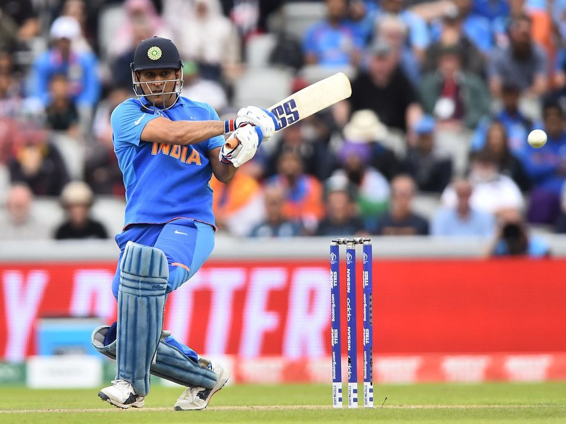

Cricket is a bat-and-ball game played between two teams of eleven players on a field at the centre of which is a 22-yard (20-metre) pitch with a wicket at each end, each comprising two bails balanced on three stumps. Cricket is played by two teams of 11, with one side taking a turn to bat a ball and score runs, while the other team will bowl and field the ball to restrict the opposition from scoring. ... During an inning, one team bats the ball while the other attempts to field.
